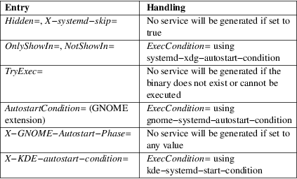

systemd-xdg-autostart-generator − User unit generator for XDG autostart files
/usr/lib/systemd/user−generators/systemd−xdg−autostart−generator
systemd−xdg−autostart−generator is a generator that creates .service units for XDG autostart [1] files. This permits desktop environments to delegate startup of these applications to systemd(1) .
Units created by systemd−xdg−autostart−generator can be started by the desktop environment using "xdg−desktop−autostart.target". See systemd.special(7) for more details.
XDG autostart may be conditionalized using both standardized and non−standardized keys. In order to handle these, the generator may create one or more ExecCondition= entries. For non−standardized keys, well−known helper binaries provided by Desktop Environments are used. All external helpers must detect their corresponding desktop environment and must return success when run in a different environment. This is important as all ExecCondition= directives must succeed for an application to be started.
Table 1. Special XDG desktop file entries that are processed

systemd−xdg−autostart−generator implements systemd.generator(7).
systemd(1), systemd.service(5), systemd.target(5)
|
1. |
XDG autostart |
https://specifications.freedesktop.org/autostart-spec/autostart-spec-latest.html